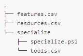

Windows, .NET, SQL Server, and IIS are either registered trademarks or trademarks of Microsoft Corporation in the United States and/or other countries.
Glazier is a collection of scripts used for building Windows images for deployment to a Helion OpenStack® environment. The image that the tool creates can be configured either by using command-line switches, or by using a Glazier profile.
For an example on how to use Glazier to create a Windows image, see Building and Deploying Windows DEA and SQL Server Express Images.
The Glazier tool can be found here: Download
Glazier can run in either Linux (Ubuntu recommended) or OSX.
To use the script, you need to have the following OpenStack environment variables set:
It is recommended to set these environment variables using the OpenStack RC file from the target environment. This can be obtained in Horizon, under Project->Compute->Access & Security->API Access->Download OpenStack RC File.
Syntax: create-glazier
Available options:
--windows-iso /path/to/windows_iso_kit
- specifies the location of the Windows iso image
--sql-server-iso /path/to/sqlserver_iso_kit
- specifies the location of the SQL Server iso image (Currently unused)
--virtio-iso /path/to/virtio_iso_kit
- specifies the path to the Virtio iso image
--hypervisor {kvm|esxi|kvmforesxi}
- specifies which hypervisor to use. Valid options are "kvm", "esxi" or "kvmforesxi". The default is kvm
--profile PATH
- (optional) path to a glazier profile. Can be used multiple times. If not supplied,
- a subdirectory named profile will be searched by default, and all profiles found will be used.
--vm-path PATH
- (optional) path to a directory where VBox files will be saved. The default is ~/.glazier
--with-sql-server {none|2012|2014}
- if this is set, you also have to set --sql-server-iso (Currently unused)
--product-key KEY
- (optional) Windows product key; leave empty if you are using a VL Windows iso with a KMS server
--use-volume-license
- (optional) Specifies that you are using a Windows volume license. If this is specified, there is no need to specify --product-key (means you are using Windows VL)
--os-network-id
- Openstack network id used for building the Openstack image. Can be found
- in Horizon interface under Project->Network->Networks->(network name)->ID
--os-key-name
- Openstack name of the key used for building the Openstack image. Can be found
- in Horizon interface under Project->Compute->Access & Security->Key Pairs
--os-security-group
- Openstack security group used for building the Openstack image
--os-flavor
- Openstack flavor used for building the Openstack image. Example: standard.medium
--insecure
- (optional) create a Windows image for a Development Platform installation that does not have an HTTPS certificate
--windows-update-proxy
- (optional) proxy used for Windows Updates on image
--dry-run
- (optional) run but do not make any changes
--verbosity verbosity_level
- verbosity level is an interger between 1-3, with 1 being the least verbose and 3 being the most verbose.
- The default is 3.
--use-colors {yes|no}
- Should the script display colors or not. The default is yes.
--version
- (optional) show the Glazier version
--glazier-vm-http-proxy
- (optional) Sets the http proxy in the created virtual machine
--glazier-vm-https-proxy
- (optional) Sets the https proxy in the created virtual machine
--help
- shows this message
A profile can be used to configure Glazier. By default we provide the profiles you need to create the images you need to enable working with Windows. However, you can create a custom profile. Create the profile in the following format:
The directory structure of the profile should match the following:

The features.csv file should have the following format:
csv Feature,Core,Standard,Desired NetFx4ServerFeatures,Enabled,Enabled,Enabled NetFx4,Enabled,Enabled,Enabled NetFx4Extended-ASPNET45,Disabled,Disabled,Enabled MicrosoftWindowsPowerShellRoot,Enabled,Enabled,Enabled MicrosoftWindowsPowerShell,Enabled,Enabled,Enabled ServerCore-FullServer,Removed,Enabled,Removed IIS-LegacySnapIn,Removed,Disabled,Removed IIS-ManagementScriptingTools,Disabled,Disabled,Removed IIS-ManagementService,Disabled,Disabled,Removed IIS-IIS6ManagementCompatibility,Disabled,Disabled,Removed IIS-Metabase,Disabled,Disabled,Removed IIS-WMICompatibility,Disabled,Disabled,Removed IIS-LegacyScripts,Disabled,Disabled,Removed IIS-FTPServer,Disabled,Disabled,Removed
The resources.csv file should have the following format:
csv destination,url \installers\product.zip,http://download.domain.com/product.zip
The tools.csv file should have the following format:
csv destination,url tool.zip,http://download.domain.com/tool.zip
The specialize.ps1 file is a PowerShell script that will run as one of the last steps on the temp instance.
Sample specialize.ps1:
powershell # Open firewall port 80 New-NetFirewallRule -DisplayName 'Allow HTTP' -Direction Inbound -LocalPort 80 -Protocol TCP -Action Allow
After creating the profile, use the --profile command-line switch (above).